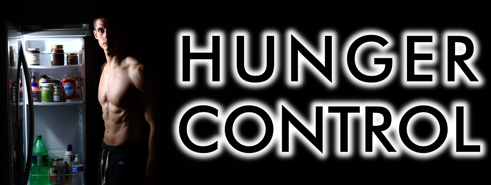

Каждый знаком с понятием “диета”. Многие на них время от времени “сидят”, чтобы приблизить форму тела к желаемой, ну или для профилактики ожирения, которое несет с собой ряд серьезных проблем со здоровьем, начиная с диабета и заканчивая атеросклерозом. Все диеты основаны на одном принципе: снизить потребление энергии либо напрямую, через подсчет получаемых с пищей калорий, либо косвенно, через урезание списка того, что можно, или времени, отводимого на перекус. Всем знакомы советы по похудению вроде избегать сладкого и жирного или не есть после 6-ти. Популярные диеты (Кремлевская, Кефирная, Аткинса, Дюкана, Интервальное Голодание, ...) базируются на том же принципе, только списки того, что и когда можно, отличаются. Так почему же так много танцев с бубнами изобретено, когда самым надежным средством контроля веса является подсчет и ограничение калорий? Всё просто: ГОЛОД! Некоторые особо закаленные личности могут жить на 3-х кусках торта и 2-х ватрушках в день, перебарывая аппетит всю оставшуюся часть суток. Однако, для большинства чувство голода является серьезным раздражителем, который забирает энергию и заставляет срываться до достижения результата.
Последние 4 года я увлекаюсь темой корректировки пропорций тела и, в том числе, экспериментирую с разными диетами (ссылка, ссылка, ссылка). Своей целью я поставил найти комфортный способ построения и поддержания желаемой формы с минимумом диетических ограничений. Рекомендации, изложенные ниже, основаны на научной литературе, а также на собственном опыте. В дополнение к советам я постараюсь объяснить почему они работают не углубляясь в дебри физиологии и психологии.
Вопреки распространенному убеждению, чувство голода присутствует всегда и приглушается оно только на время переваривания пищи (ссылка). Таким образом, главным советом по управлению голодом будет:
-
ПИТАТЬСЯ. Ваш организм заставит вас страдать через 2-3 недели, если ограничение калорийности превышает 15-20% от уровня, при котором поступление калорий равно их расходу. Если же, питаясь с дефицитом хотя бы в 10% на протяжение пары месяцев, чувство голода не начало вас беспокоить, то читать дальше нет смысла. Однако, если голод достает с каждым днем всё сильнее после урезания калорийности, то следующим советом будет...
-
УВЕЛИЧИТЬ ОБЪЕМ потребляемой пищи БЕЗ УВЕЛИЧЕНИЯ КАЛОРИЙНОСТИ. Ваш организм посылает разного рода сигналы голода вашему мозгу. Один из таких сигналов формируется растяжением стенок желудка. Отсюда и следует, что больший объем еды дает больше сытости. Зелень и салатики рекомендуют употреблять на диете как раз потому, что они занимают много места в желудке при том, что калорий в них почти нет. На этом же принципе базируется и отказ от жирного, мучного и сладкого во время диет. Тортики, шоколадки, плюшки да ватрушки содержат много калорий на единицу веса продукта. Для сравнения, печенье содержит 451 килокалорию (ККал) на 100 грамм, а огурцы всего 15. Помимо высокой энергетической плотности, рафинированная пища имеет еще один диетический недостаток - она очень быстро переваривается. Таким образом, тот небольшой объем вкусняшек, которые можно себе позволить на диете, не может удержать чувство сытости достаточно долго. Следовательно, очередным советом по контролю голода будет...
-
ВЫБИРАТЬ ПИЩУ, которая ДОЛГО ПЕРЕВАРИВАЕТСЯ. Продукты богатые белком и клетчаткой усваиваются достаточно медленно и позволяют выдерживать перерывы между приемами пищи с наименьшим дискомфортом. Рыба, нежирное мясо, творог без фруктовых наполнителей, некрахмальные овощи будут заставлять желудок работать не перегружая организм калориями. Цельнозерновые крупы и цельные фрукты в этом плане будут хорошей альтернативой белому рису и сокам. Еще одним способом увеличения времени переваривания пищи я бы назвал разнообразное меню. Непривычная пища заставляет организм подстраивать состав желудочного сока под новые продукты, замедляя таким образом пищеварительный процесс.
3-х нехитрых совета, описанных выше, помогут заложить основу для составления рациона для низкокалорийной диеты. Тем не менее, выбор продуктов питания является не единственным способом борьбы с чувством голода, которое может иметь как физиологические, так и психологические корни. На борьбу с последними направлены следующие рекомендации:
-
Готовить еду на день. Планирование приемов пищи позволит легко следить за количеством калорий и не думать о том, чего бы перекусить, в течение дня.
-
Не есть, когда не голоден. Кушать жизненно необходимо, а вот завтракать, обедать или ужинать - нет. Я, например, утром не голоден, поэтому могу легко пропустить завтрак, а вот заснуть на голодный желудок получается с трудом. Так что, вместо того, чтобы не есть после 6-ти, я не ем до полудня.
-
Прекращать прием пищи при наступлении чувства насыщения. Остатки можно доесть, когда голод снова накатит.
-
Тщательно пережевывать пищу. Чувство насыщения приходит минут через 20 после начала трапезы. Поэтому, чем дольше перекус, тем меньше калорий нужно, чтобы голод отпустил.
-
Не держать еду на видном месте. Психологический голод может разыграться глядя на продукты питания, даже если физиологической потребности в приеме пищи нет. Чем меньше еды попадает в поле зрения, тем меньше вероятность проголодаться. Как говорится, с глаз долой - из сердца вон.
-
Не хранить высококалорийные вкусняшки дома. Если вам лень сходить в ближайший магазин за одной порцией любимого лакомства (четверть шоколадки, мороженное, пара печенюшек, пол куска торта, маленькая упаковка чипсов), то испытываемый голод - психологический (искусственный).
-
Высыпаться. Исследования показывают, что недостаток сна приводит к существенному перееданию. Помню, как закидывал в себя всё, что под руку попадало после ночных рейсов или когда приходилось вставать намного раньше обычного. 7-8 часов сна для взрослого человека должно хватить, чтобы не попасть в зону риска.
-
Заниматься спортом. Ходьба, бег, катание на велосипеде, занятия в тренажерном зале и другие виды физической активности позволяют забыть о голоде на час-два во время занятий.
-
Поэкспериментировать с пищевыми добавками. Добавки для подавления аппетита работают не всегда и не на всех. Я перечислю их в порядке доказанности действия:
-
5-htp продлевает чувство насыщения. Сам не пробовал, но исследования подтверждают действенность добавки.
-
Я использую forskolin для подавления аппетита. Не смотря на то, что исследований прямого влияния на чувство голода нет, на меня добавка действует именно таким образом.
-
Употребление грейпфрутов перед трапезой показало уменьшение дневной калорийности в одном исследовании и никакой разницы в другом.
-
Кофеин и прочие стимуляторы нервной системы, которые часто называют “жиросжигателями”, жир не сжигают, ровно как и не оказывают никакого эффекта на аппетит.
-
Рыбный жир, хоть и является референсной добавкой для уменьшения уровня триглицеридов (жиров) в крови, а также имеет массу положительных эффектов для здоровья, с голодом бороться не помогает.
Список приведенных рекомендаций не исчерпывающий. Я постоянно в поиске новых действенных способов управления голодом. Буду крайне признателен тем, кто поделится своими секретами контроля аппетита, а также с удовольствием отвечу на любые вопросы по теме и около неё.